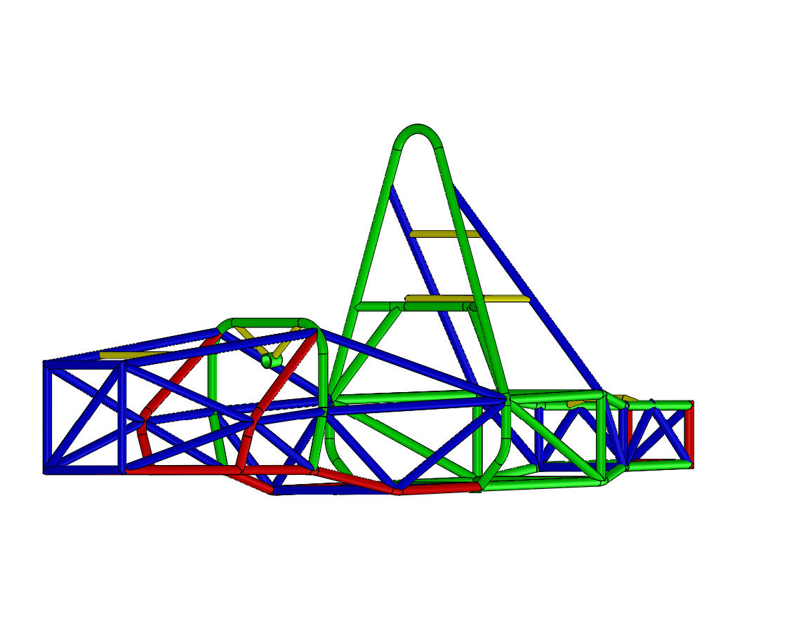

CHASSIS STRUCTURAL ANALYSIS
Chassis finite element analysis in SolidWorks Simulation, covering torsional stiffness and frontal and side-impact load cases.
Scope. Structural assessment of the Formula Student chassis under torsional, frontal and side-impact loading.
My contribution. Worked on the finite element models and compared beam, shell and solid modelling approaches for the chassis assessment.
Technical focus. Modelling assumptions, boundary conditions and their influence on the predicted structural response.